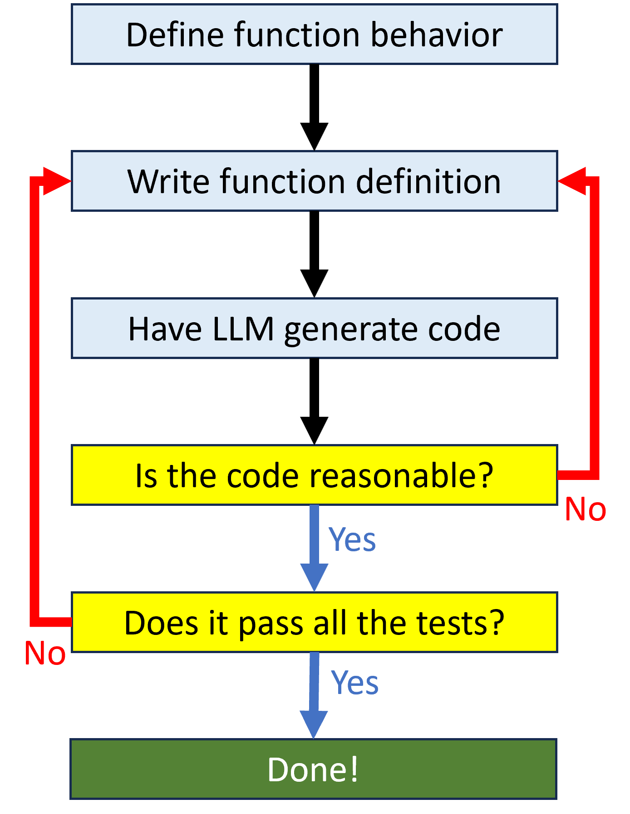
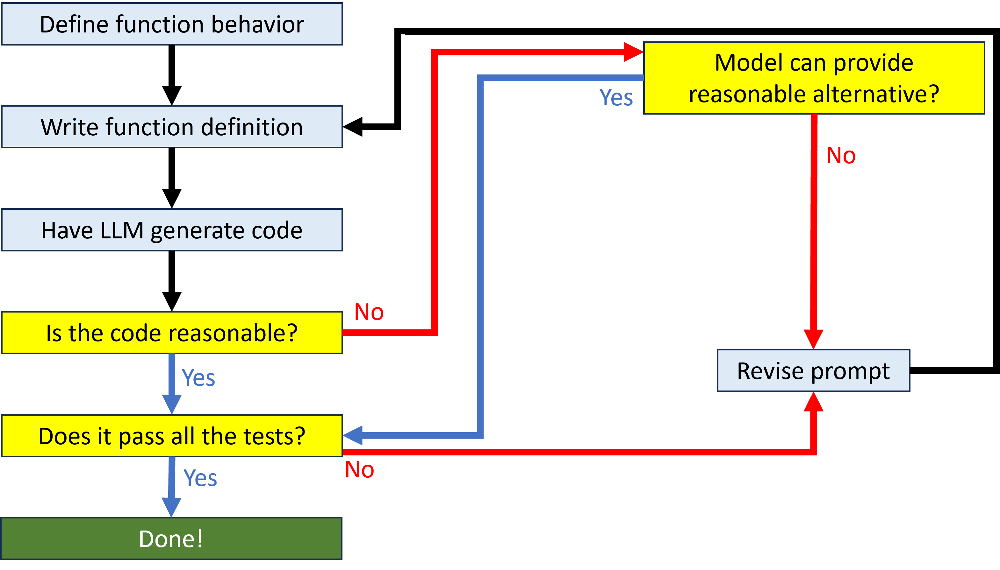
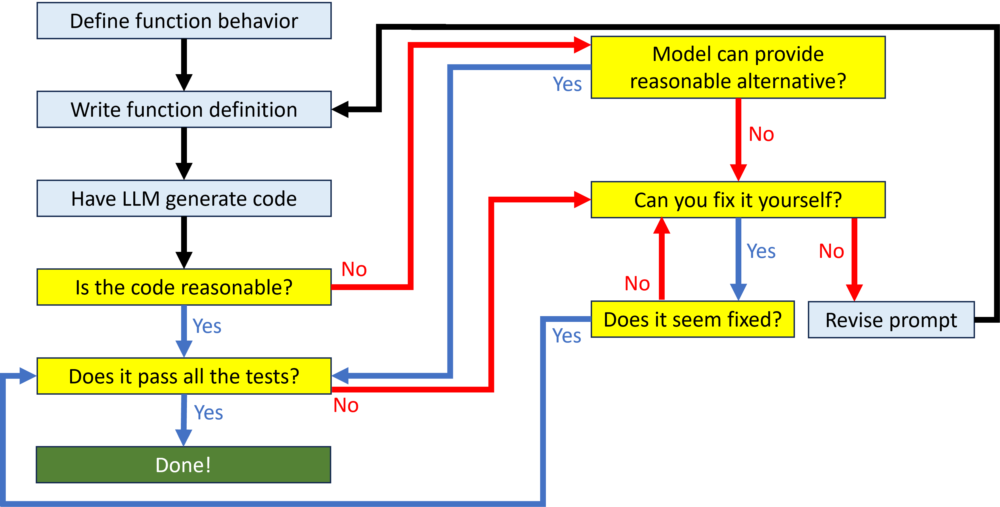
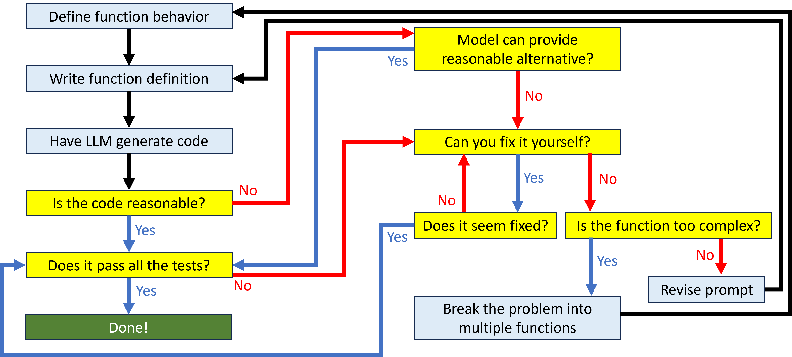

Use AI Models To Write Python Code, Even Though They Are Bad At It
Introduction
Advances in machine learning techniques have resulted in the development of a type of deep learning model called a Large Language Model (LLM). Trained on a massive body of input, LLMs can generate plausible output in a variety of modalities given a prompt. One potential use case of LLMs is in generating Python code for solving geospatial problems. But the current state-of-the-art technology is still not capable of working fully autonomously. While substantial improvements have been made in the recent past, and will likely continue to be made in the future, there is a good chance that these models will always require at least some human intervention in order to output viable code.
Consequently, the best way to approach these models is not as something that can replace humans, but as an additional tool to help humans work faster and more efficiently. This workshop will introduce the fundamental skills that people will need in order to make effective use of generative AI models.
LLMs are very good at some things. They typically create Python code in the appropriate syntax and can generally summarize chunks of code correctly. This means that when working with an AI code assistant, it is no longer as important to spend time learning the details of Python syntax. But there are some skills that are still important for people to cultivate. These skills include:
- Recognizing Python language features. You need to know enough about the Python language to recognize generally what generated code is doing.
- Function design. You need to know how to design functions in a way that serves as an effective prompt for the model.
- Prompt engineering. You need to know how to change prompts to iterate on the model-generated output.
- Problem decomposition. You need to know how to break big problems down into small problems that the model can more easily solve.
The theoretical framework for this workshop is taken from Leo Porter and Daniel Zingaro’s 2023 book Learn AI-Assisted Python Programming with GitHub Copilot and ChatGPT. That book is an excellent reference with additional depth beyond what can be covered here. This workshop will explore the strategies outlined in the book in the specific context of writing Python code to solve geospatial problems. That specific context will be important because, as we will see, LLMs have a poor understanding of GIS workflows. Your domain expertise will be necessary in order to get the most out of working with these models.
Python Language Features
While you do not need to know everything about Python syntax, you should know enough to recognize the particular language features that generated code is using.
Modules
One of the most important facets of Python is the ecosystem of modules that people have created to solve a diverse array of problems. You can import these modules into your code so that you don’t have to write your own solution. Python’s standard library has many modules for working with the most common types of problems. Other modules need to be downloaded and installed separately. If you have ArcGIS Pro installed, you already have Python environment with about 200 additional modules installed.
You can import all the functionality of a module with a simple import statement, which will look something like:
You can also import just a part of a module’s functionality by specifying those parts, which will look something like:
You can give a module an alias when you import it. Aliases make it easier to refer to a module, and look something like:
You should be able to recognize what it means when the model produces code that imports a module. Because the capabilities of a model cannot be used unless the module is imported, you will also need to recognize when the model has created code that makes use of a module, but has not also written the appropriate import statement.
Data types
Different types of values have different capabilities. For example, you can’t multiply a piece of text by another piece of text. You should recognize the data types created by the model. The table below shows the most common general Python data types.
| Data type | Description | Examples |
|---|---|---|
| Integer | Whole numbers | 80, -2 |
| Float | Any numeric value | 9.84, -1.0 |
| Boolean | Logical values | True, False |
| String | A set of characters, generally representing text values. Enclosed in " or ' quotes. |
"string", '8', "False" |
| List | Mutable (changeable) ordered sequence of values. Enclosed in [] brackets |
[1, 2, 3, 4, 5] |
| Tuple | Immutable (unchangeable) ordered sequence of values. Enclosed in () parentheses. |
(1, 2, 3, 4, 5) |
| Dictionary | Collection of key: value pairs. Enclosed in {} braces. Keys are usually strings or numbers. Values can be anything. |
{"MN": 1,"WI": 2} |
Lists, tuples, and dictionaries are containers for other values. Those values could be any other types, even other lists, tuples, or dictionaries. You can easily have a list of dictionaries, where each value in each dictionary is itself another list of dictionaries.
Variables
Some values, like a long list or heavily nested dictionary, are very complex and hard to work with directly. It can be convenient to give values a name and refer to that value by its name instead. These variable names can also imbue a value with meaning for anyone reading the code. A good name can help us understand better what the code is doing. Values are assigned to variable names using the assignment operator =. For example:
Blocks
A block is a chunk of connected code that performs a task. You can recognize a block because the first line will end with a colon (:) and the rest of the block will be indented one level relative to the first line. It is possible to have blocks inside of blocks.
Conditional blocks
Allow you to deal with branching logic in your code. Conditional statements check the truth value of a statement, and if it is true, execute the code in the rest of the block. You can recognize a conditional by the use of the if, elif (else if) and else keywords. Statements typically use the logical operators
| Operator | Meaning |
|---|---|
> |
Greater than |
< |
Less than |
== |
Equal to |
>= |
Greater than or equal to |
<= |
Less than or equal to |
!= |
Not equal to |
For example:
This code snippet checks the value of capital against different possibilities. It first checks to see if the value is equal to "Saint Paul". If so, it sets the value of state to "Minnesota". If not, it checks to see if the value is equal to "Madison". If so, it sets the value of state to "Wisconsin". If capital is any other value, it sets the value of state to "Unknown".
For loops
Allow for repeated code execution. You can recognize a for loop by the use of the for and in keywords. For example:
This code snippet starts with a tuple seq and an empty list big_seq. It looks at every value inside seq in order. If the value is bigger than 4, it appends that value to big_seq. After running this code, the value of big_seq will be [5, 6].
Functions
Encapsulate some process so that the process can easily be repeated without having to write the code to perform that process again. Functions must be defined before they can be used. You can recognize a function definition by the use of the def keyword. A function will typically produce some value, specified by the return keyword. For example:
This code snippet creates a function that calculates the Euclidean distance between two points, given their x,y coordinates. It uses to Pythagorean formula: first it calculates the square of the difference between the two x-coordinates (the a_sq value), then it calculates the square of the difference between the two y-coordinates (the b_sq value). Then it returns the square root of the sum of those squared differences.
After a function has been defined, it must be called in order to execute it. You can recognize a function is being called by the parentheses after its name. There may or may not be any values inside the parentheses. For example:
This code snippet calls the dist function to find the distance between the point at coordinates 0,0 and the point at coordinates 1,1. It will return a value of approximately 1.41.
Files
Sometimes the data we want to work with is stored outside the script, in files. You will need to open those files in order to work with the data inside them. You will recognize code that opens a file by the use of the open function, which specifies the file’s path and a mode ('r' for read, 'w' for overwrite, 'a' for append). As a best practice, opening files should be done in a context manager block, which you can recognize by the use of the with and as keywords. For example:
This code snippet will open the file located at C:\temp\text.txt and open it for reading. The open file is stored in the f variable. It loops through every line in the file and prints out that line.
Python can read text files, but some file types may require additional modules to read them correctly. For example, the csv module is helpful for reading csv files as tabular data.
This code works similarly to the code above, but reads a row of table values, instead of a line of text.
Exercise: Identify programming features
Time: 10 minutes
- Open the Python Feature quiz (Opens in new tab)
- Answer the questions about Python features until you either feel confident that you can recognize all the features or you get bored.
- Open the source code for the quiz in a new browser tab.
- Examine the code. Which features do you recognize? Which features do you not recognize?
Have the model summarize code features
If you have access to an LLM interface, like Copilot or ChatGPT, you can have the model summarize a chunk of code that uses Python features you do not recognize. LLMs tend to be much better at creating reliable summaries than they are at generating original content. You can have the model summarize the code it generated for you, or code snippets you have found elsewhere.
Function Design
One way to work effectively with an AI code assistant is to write code that defines and uses functions. As you will see later, that makes it easier to break a large problem into more manageable pieces. Generally, you the human will design the function, and the model will use that design as a prompt to generate code. There are some guidelines you should follow when designing functions so that the model is more likely to generate usable code.
Clearly define the task
A single function should perform a single job. You should be able to come up with a relatively short function name that clearly summarizes what that job is. The function name is part of what the LLM will use to help it understand what kind of code to generate, so you want it to be as specific as possible. If you can't come up with such a name, chances are pretty good that your function is trying to do too much.
Imagine you had a csv with the lat/lon for point locations, and needed to be able to put a buffer around each point. You wrote this function definition to prompt the model:
Limit input parameters
In the function definition, the input parameters are the names you put inside the parentheses. These names represent values that are used in the function. Generally, a small number of parameters (four or less) will help the model generate better code. Giving these parameters good names that describe what the values represent will also help. The function name and parameters are together called the function signature.
Imagine you had a feature class that was in the wrong projection and you needed fix it. You wrote this function definition to prompt the model:
Add a doc string
A doc string provides additional specific details about what the function does and how it should work. This doc string is also part of the prompt the LLM will use to generate code. The doc string may define what the input parameters represent, what the expected output is, details about what the function should (or should not) do, or any other information that describes the function more fully than can be done by the name alone. Taken together, the function definition and doc string will look something like:
Evaluate model output
Based on your function design, you can have the model generate the code that does what the function is supposed to do. You will need to check the model’s work, because chances are good that the generated code will not be correct. Some things to look out for:
- Function length. If the body of the function is more than about 20 lines of code, that is good evidence the model is trying to do too much. It also increases the possibility that there’s a mistake somewheres
- Output value. Check the value returned by the function. Is that what the function should produce?
- Code you don’t understand. This code may or may not be correct. If you don’t understand it, you can’t evaluate it. You can use the model itself to explain the code or run it by a trusted person.
If the generated output seems problematic, adjust your function name, parameters, and doc string to help the model produce a better response. We’ll talk more in the next section about prompt engineering so you can do this more effectively.
If the generated output seems reasonable, try a few test cases to see if you get the result you expect. If it works correctly, you’ve got a successful result! If not, you can go back and adjust your function design to get a working result from the model.
Basic function design cycle
The function design cycle is the iterative process of moving from function design to model output evalutation back to function design until you get a satisfactory result.

Exercise: Design a function
Time: 15 minutes
- In an editor of your choice, write a function signature and doc string
- Challenge step:
- If you have access to an LLM:
- Prompt the model to generate the function body
- Test the generated code to see the results
- Change the function design and re-prompt if needed
- If you do not have access to an LLM:
- Write additional function signatures and doc strings
- If you have access to an LLM:
Prompt Engineering
Prompt engineering is the official name for “messing around with the function design until the model gives us a result we like”. Effective prompt engineering is a vital skill for working with LLMs, just like using effective keyword terms is a vital skill for working with search engines. You will want to get a feel for what types of function designs are more likely to give you the results you want. And when you get results you don’t like, you want to be able to understand what kinds of changes are likely to work. Developing these intuitions takes practice, and involves as much art as science, but there are some specific prompt engineering strategies you can employ to increase the chances of success.
Have the model suggest changes
Most models maintain sufficient context that they know what responses they have already provided. That means it is generally possible to interact with the model and have it provide fixes based on problems you have identified.
For example, the Copilot extension for VS Code can provide alternatives to a selected code snippet with the ctrl+enter shortcut. If the Copilot Chat extension is installed, you can use the fix command to have Copilot suggest improvements to a snippet of code. These suggestions and fixes do not have to be on code generated by the model. You can have it suggest fixes for code you wrote yourself as well.
Iterate on the prompt
If the model is not able to provide any helpful alternatives, it may be that the function design doesn’t have the right type of information to effectively prompt the model. There are a couple of iteration strategies that can be helpful:
- Add specificity. This might mean making the function name less generic, or it might mean adding details to the doc string. For example, the function name
geojson_extentis more specific thanparse_geojson. - Add constraints. Sometimes, the model will suggest code that incorporates an inappropriate element. For example, it may create a new feature class when the function should modify a feature class in place. You might get better results by specifying in the doc string that the function should not create a new feature class.
- Narrow scope. The generated code may be bad because you’re asking the function to do too much. For example, a function to get the extent of geojson features may not successfully handle a file with multiple geometry types. Reducing the scope to just a single geometry type may produce better results:
point_geojson_extentinstead ofgeojson_extent.
Add tests
Another strategy for providing better prompting is to add automatic testing. The Python standard library has a module called doctest that lets you write tests in the doc string. When the code is executed, those tests are run as well. The module will tell you whether the code produced the expected results. Because the tests are in the doc string, they also help the model write code that is more likely to pass the tests.
When writing these tests, create several different tests to check different types of inputs. Just because the function correctly handles one situation does not mean it correctly handles every situation. In particular, think about potential cases where an input might be a problem. For example, does the function correctly handle inputs on the edge of the dataset? Or with very large or very small values? If a function is expecting polygon data, what should happen if the input is point geometry? Sometimes a function should raise an exception, and you can even write a test that ensures the correct error message is raised for a given bad input.
These tests look like code that calls the function and shows the expected output of that function. For example:
In this case, the tests check three potentially problematic inputs.
- Rock County borders both Iowa and South Dakota, but should not return any counties outside Minnesota.
- Kanabec County should include Chisago County even though they only border at a single point.
- St. Croix is not the name of any county in Minnesota, and the function should return a
KeyError.
When you call the doctest.testmod() function in your code, doctest runs all the tests you defined and compares the actual values returned to the expected values. If they match, the test passes. The module will report how many tests passed, and the actual values returned for any failing tests. For example, a function that did not correctly check counties that border at a single point would return the following output showing that the Kanabec County test had failed.
doctest.testmod()
**********************************************************************
File "__main__", line 7, in __main__.county_neighbors
Failed example:
county_neighbors('Kanabec')
Expected:
['Aitkin', 'Chisago', 'Isanti', 'Mille Lacs', 'Pine']
Got:
['Aitkin', 'Isanti', 'Mille Lacs', 'Pine']
**********************************************************************
1 items had failures:
1 of 3 in __main__.county_neighbors
***Test Failed*** 1 failures.
TestResults(failed=1, attempted=3)
Add prompt engineering to the function design cycle
Prompt engineering lets you add some specificity to the function design cycle to handle those situations where you don’t get the response you want:

Exercise: Improve a function
Time: 15 minutes
Given this terrible function design for calculating Manhattan distance:
- Improve the function and parameter names
- Add a doc string with a description of the function
- Add tests to the doc string
- Challenge step:
- If you have access to an LLM, prompt the model to generate the function body
- If you do not have access to an LLM, design a second function (including doc string and tests) for calcuating Euclidean distance
The role of human code-generating skill
If you’re already a Python expert, you may wonder what benefit AI code generation has for you. After all, you can already write better code than it can. But using an AI to help generate code means you can write code faster. Boilerplate code, boring conditional blocks, long dictionary definitions, and other tedious constructs can all be created much faster when the AI writes them for you. That frees you up to focus on higher-level thinking about the code. AI code generation doesn’t mean your expertise is wasted. It just means you engage with the language differently.
Add manual review to the function design cycle
The more you know about Python, the more you can short circuit some of the function design process. If you can fix some of the problems in the generated code yourself, you don’t have to re-write the prompt and try to get the model to fix it.

Problem Decomposition
If you give an LLM a big problem and ask for a solution, chances are that it will fail to provide a reasonable response. As you have seen, they perform much better on narrower, more specific tasks. That’s especially true for GIS workflows. Because geospatial problems are a relatively niche topic, LLMs don’t have a robust training set from which they can generate coherent responses to questions about them. The models are prone to doing silly things like recommend raster data management tools for vector data.
But sometimes we have a big problem, and we need a sophisticated solution. Fortunately, you can leverage your GIS expertise to help you break down a complex task into pieces small enough for the model to handle.
Top-down design
Imagine you had to identify areas for habitat conservation and started with a single big function definition like this:
The model will probably not be able to create appropriate code for this function. You need to decompose this problem into its constituent elements so that the model can reasonably provide an answer. This process of taking a big problem and breaking it down into pieces is called top-down design. For example, maybe you decide that the highest priority for conservation are habitats of threatened and endangered species that are within 2,000 meters of highways and not already inside existing conservation easements.
You might design a few different functions to fulfill these subtasks:
The model is much more likely to be able to provide solutions for these three narrower functions. And once you have working code for these sub-tasks, you can define a better function that puts all the pieces together. For example:
Because the model now knows how to identify highways, buffer those highways, and extract the priority habitats, it can use those functions inside the larger habitat_conservation function that solves the entire task.
Full function design cycle
Problem decomposition means that if the model isn’t providing you with usable code, you can improve your results by breaking a complex function down into its constituent parts. You can repeat this process, decomposing the problem into successively smaller pieces until you get a result that works.

Exercise: Decompose a problem
Given this too-big function:
Replace it with a few other functions that perform the necessary subtasks
Resources
If you’re looking for additional information about the topics covered in these pages, you might consult these resources:
- Learn AI-Assisted Python Programming with GitHub Copilot and ChatGPT (manning.com)
- Decomposition, Abstraction, and Functions (mit.edu)
- Prompt engineering (openai.com)
- doctest — Test interactive Python examples (python.org)
- Python's doctest: Document and Test Your Code at Once (realpython.com)
- Style Decomposition (stanford.edu)
- ArcPy Essentials (esri.com)
- ArcGIS Pro geoprocessing tool reference (arcgis.com)
- API Reference for the ArcGIS API for Python (arcgis.com)
- PyQGIS Developer Cookbook (qgis.com)
- Open Source Spatial Programming & Remote Sensing (pygis.io)